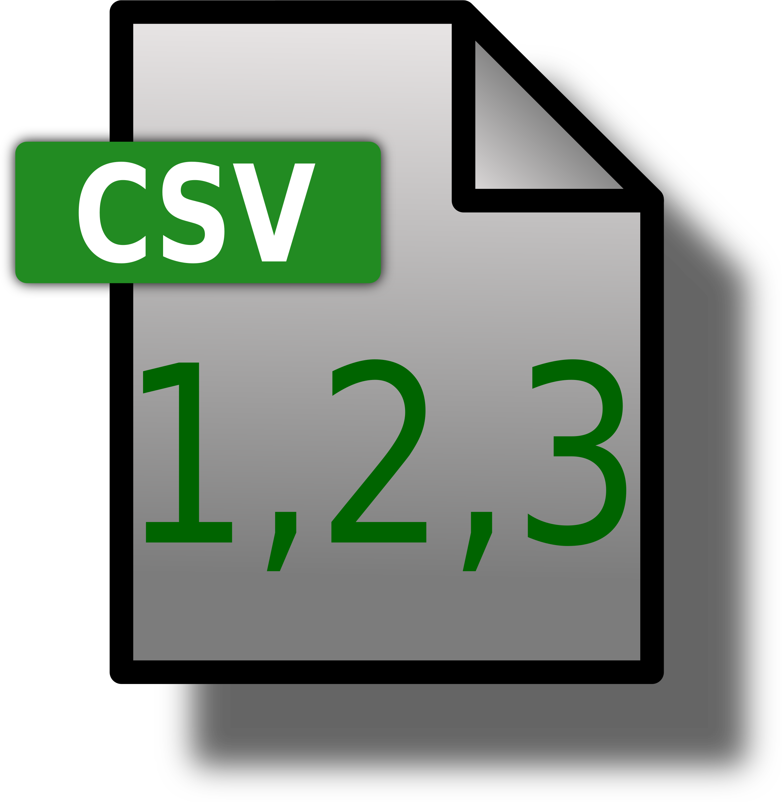
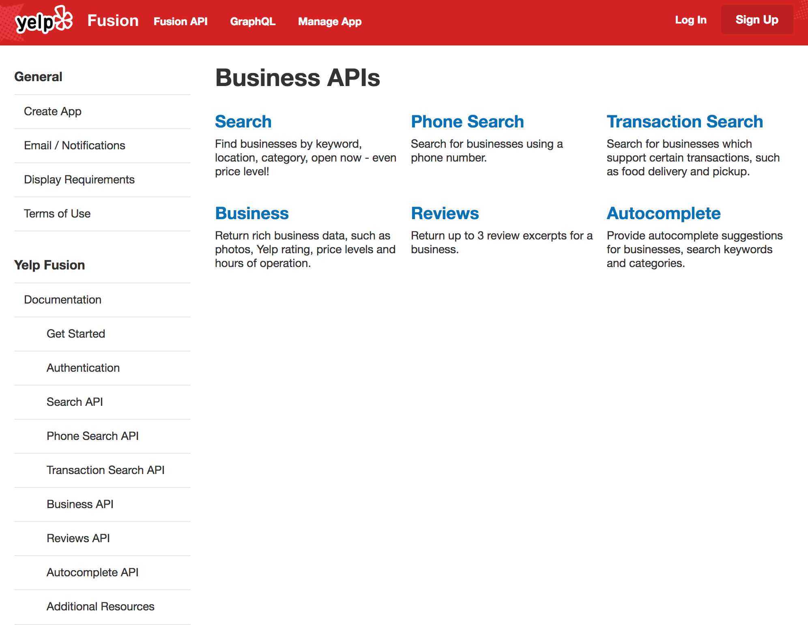
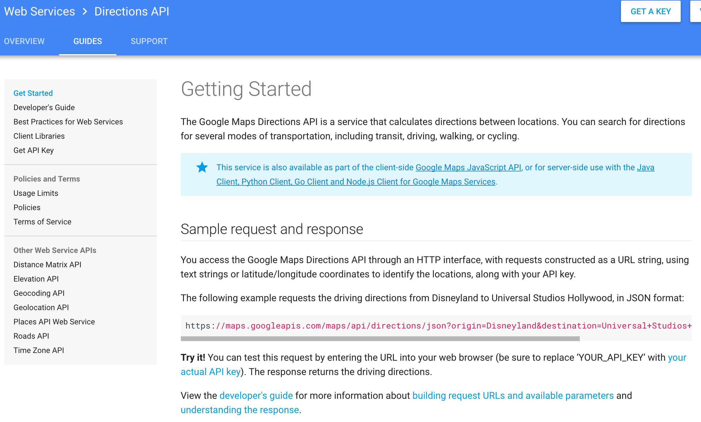
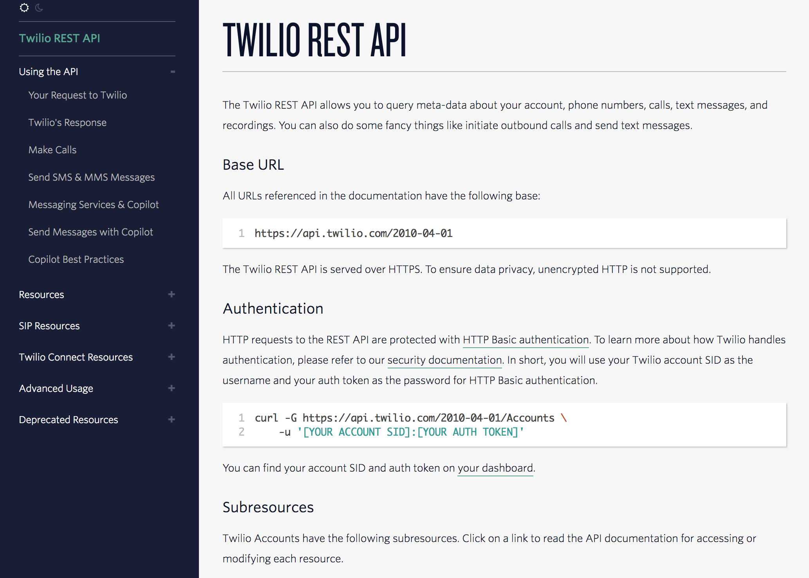
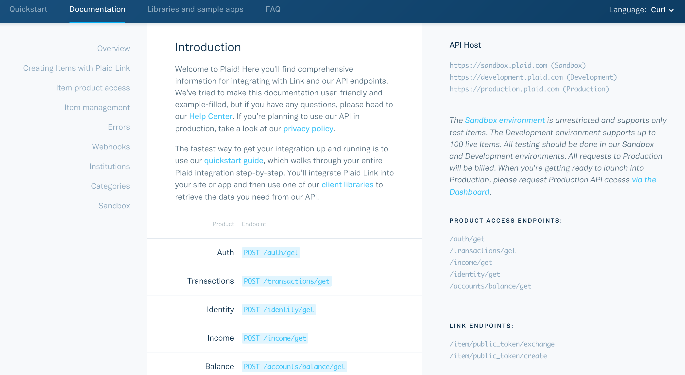
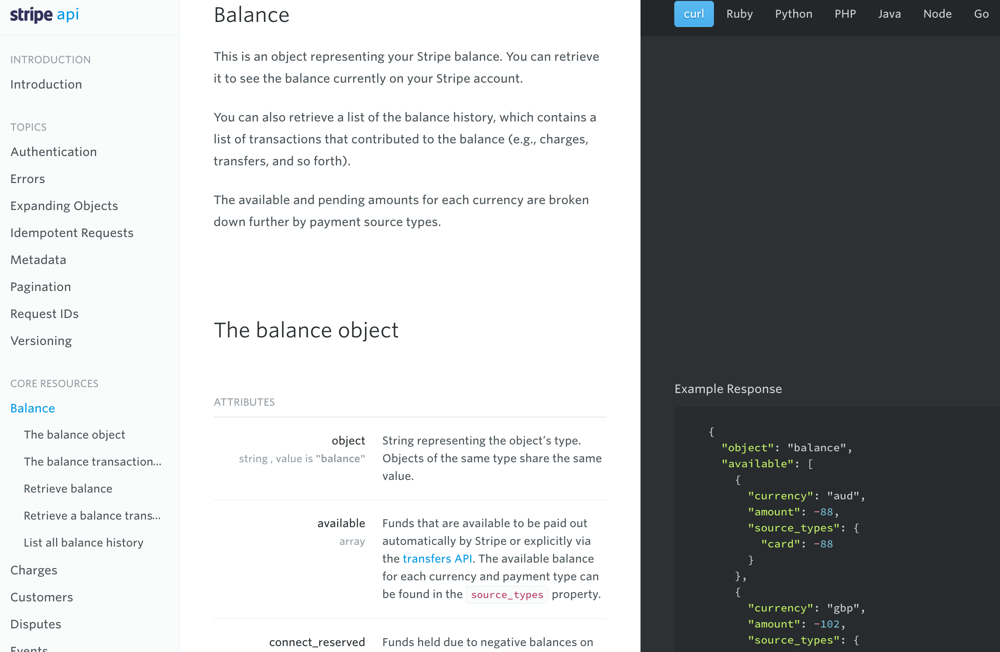
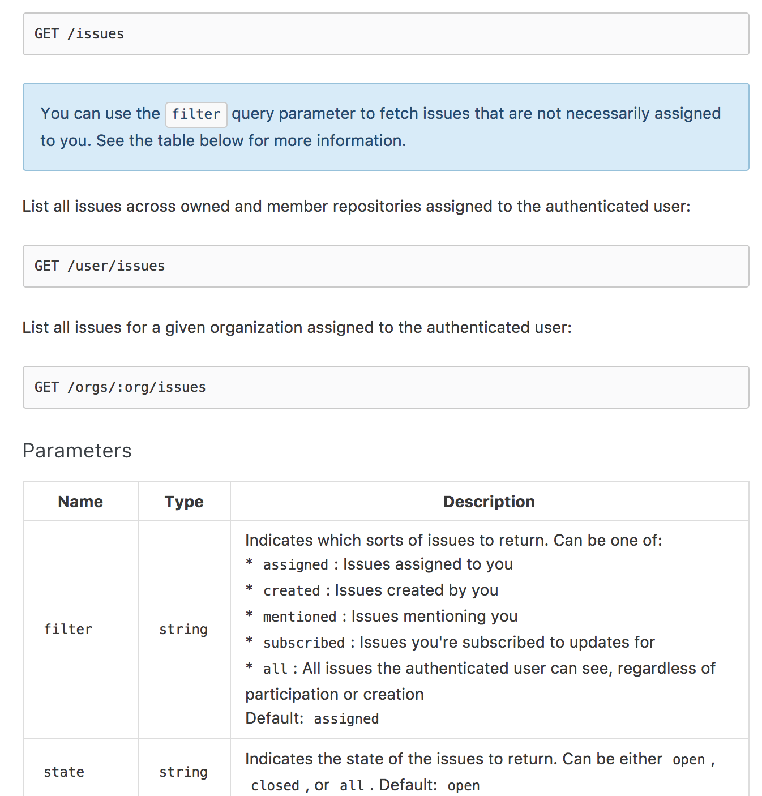
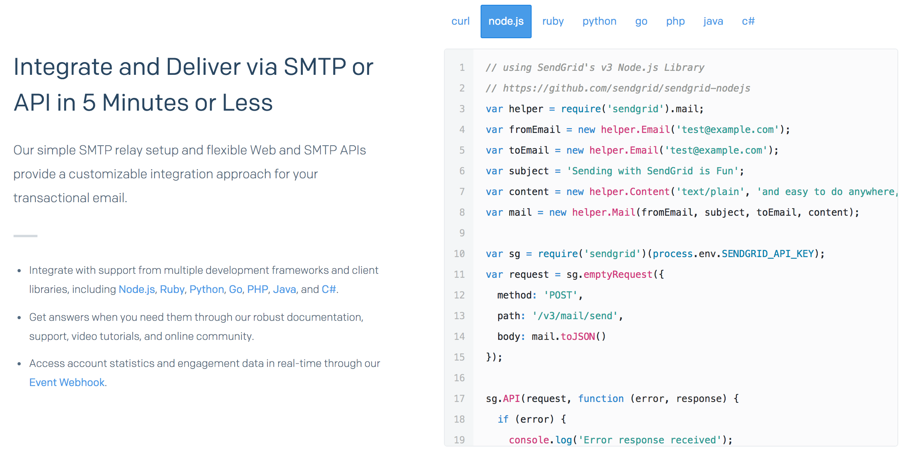
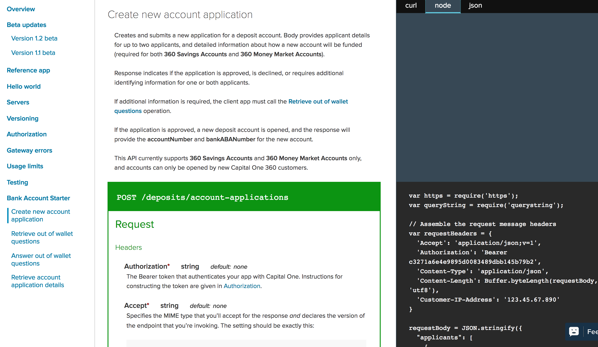

I want to write a cool app that helps people get from place to place. My app needs access to map data and directions.
The data ("resources") exist, but the data do not belong to me.
Problem #2
Luckly, I found a company that was nice enough to give me some data -- Sweet! -- in the form of a CSV files -- hmmmm...

I was provided "access" to the data, but this access method is painful. The data files are clunky, difficult to update, and at high risk of corruption. My app is gonna suck!
Meet the API: Application Programming Interface
"Interface" is the operative word
Enables and simplifies access to resources
APIs are Everywhere: Yelp

APIs are Everywhere: Google Maps

APIs are Everywhere: Twilio

APIs are Everywhere: Plaid

APIs are Everywhere: Stripe

APIs are Everywhere: GitHub

APIs are Everywhere: SendGrid

APIs are Everywhere: Capital One

Why do companies allow others to use their data?
New revenue opportunities
New business partners
Tap into innovator communities
Core to growth strategy
Contribute to the community
Brand value
Why don't enough financial companies do this?
Concerns about who owns the data
In Europe, customers own their data
In the U.S., not as clear
Potential for misuse of the data
Privacy concerns
Competitive fear
Who produces APIs?
Mr. Ballmer knows where APIs come from ...
Who consumes APIs?
The same people use them, too!
APIs are Products
For developers whose applications require third-party resources, like data, media (images, video), computing power, and business processes, RESTful APIs are easy-to-use interfaces that provide reliable access to such services.
API = Interface + Services
The Interface (the docs/access layer)
The most important part of an API
Defined by "the docs"
Explains how to get the desired results
Enables discovery; inspires creativity
Helps answers important questions
"How do I do X?""
"What's wrong with my code?""
The Interface Is Critical to the User Experience
Inaccurate docs = bad customer experience
Bad customer experience = little/no usage, little/no revenue
Adoption starts with the interface
Must be understandable
The Service (servers)
The actual service is kinda important, too ;)
Determines "how" to fulfill requests with wide latitude
Opaque to the customer
Behavior should be governed by the docs
Must consistently perform
Service Performance is Critical to the User Experience
Slow responses (latency) create problems for app developers
Vague errors make productionalization difficult
Inconsistent responses make productionalization impossible
Modern APIs (REST)
Under the hood: computers talking to computers
Problem
Need a common language for computers to understand each other
Hyper-text Transfer Protocol (HTTP) already exists (the "Internet")
Solution:
Configure computers to listen and respond to requests
Use existing HTTP architecture to enable communication between those computers
How it works:
Open a communication session
(Request) Client sends entire representation of thing being communicated
(Response) Server responds
Immediately close the communication session
Uni-directional communication; client-initiated
Modern APIs (Streaming)
Under the hood: computers talking to computer
Problem
Existing infrastructure has too much overhead
Opening and closing multiple connections can be slow and inefficient
Solution:
TCP/WebSocket technolgy enables lightweight, bi-directional communication
Bi-directional communication = client initiation not required
How it works:
Open a communication session
Keep connection open for as long as necessary
Communicate messages of arbitrary length back and forth at will